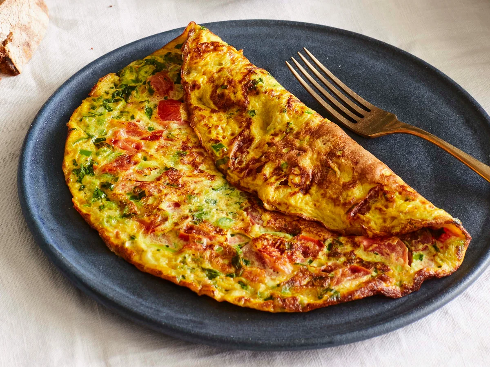

SIMPLE OMELETTE RECIPE
Master the omelette with our simple recipe then add the filling of your choice – grated cheese, ham, fresh herbs, mushrooms and smoked salmon are favourites.
PREPARATION TIME
- Total:10 minutes
- Preparation:5 minutes
- Cooking:5 minutes
INGREDIENTS
- 3 eggs
- 1 tsp sunflower oil
- 1 tsp butter
INSTRUCTIONS
- Season the beaten eggs well with salt and pepper. Heat the oil and butter in a non-stick frying pan over a medium-low heat until the butter has melted and is foaming.
- Pour the eggs into the pan, tilt the pan ever so slightly from one side to another to allow the eggs to swirl and cover the surface of the pan completely. Let the mixture cook for about 20 seconds then scrape a line through the middle with a spatula.
- Tilt the pan again to allow it to fill back up with the runny egg. Repeat once or twice more until the egg has just set.
- At this point you can fill the omelette with whatever you like – some grated cheese, sliced ham, fresh herbs, sautéed mushrooms or smoked salmon all work well. Scatter the filling over the top of the omelette and fold gently in half with the spatula. Slide onto a plate to serve.At this point you can fill the omelette with whatever you like – some grated cheese, sliced ham, fresh herbs, sautéed mushrooms or smoked salmon all work well. Scatter the filling over the top of the omelette and fold gently in half with the spatula. Slide onto a plate to serve.
NUTRITION
Nutrition: Per serving:
kcal
277,
fat
22g,
saturates
7g,
carbs
0g,
sugars
0g,
fibre
0g,
protein
20g,
salt
0.8g.